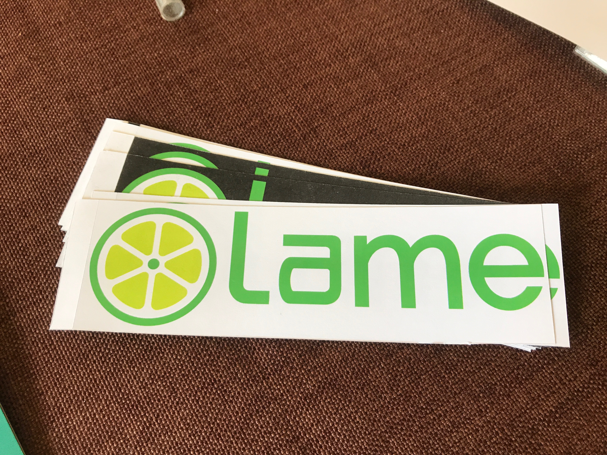

If you’ve been anywhere near a college campus recently you’ve almost certainly noticed the masses of electric scooters descending upon us like a plague of locusts, or witnessed some future Darwin Award winner blast through a busy intersection at 20 miles an hour. In my local area this problem was particularly apocalyptic, with “Lime Scooters” being a particular nuisance. It seemed some form of retaliation was necessary, which brings us to this project. I, let’s say liberated, the company’s logo, and made a slight alteration, changing their “I” to an “A”. Clearly I have a well developed sense of humor. I then made stickers out of the logo the exact size as they appeared on the scooters, and went about the business of creating some Lame Scooters. The effects were subtle, and I’d like to think there are still some out there that have yet to be caught.
